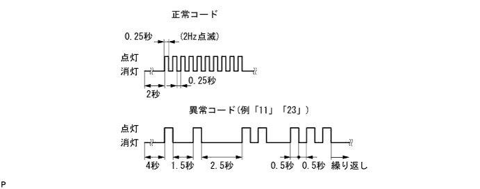

|
Turn IG OFF.
Using SST, connect terminals 13 (TC) and 4 (CG) of the DLC3 connector.
- SST
- 09843-18040
- ■ NOTICE ■
- Connecting the connector to the wrong position will cause a malfunction, so never make a mistake.
Turn IG ON.
Read the number of blinks of the 'P/S warning light' on the combination meter.

- □ HINT □
- If normal, the light repeatedly illuminates for 0.25 seconds and goes off for 0.25 seconds (2Hz blinks).
- If there is 1 malfunction code, the same code is displayed at 4-second intervals. If there are multiple malfunction codes, the different codes are displayed at 2.5-second intervals, and after one cycle, they are output again after 4 seconds.
- If multiple codes are output, they are output in order starting from the lowest code number.
Disconnect terminals 13 (TC) and 4 (CG) of the DLC3 connector.
- ■ NOTICE ■
- If there is a malfunction, after repair, check the DTCs again and confirm that no malfunction codes are output.